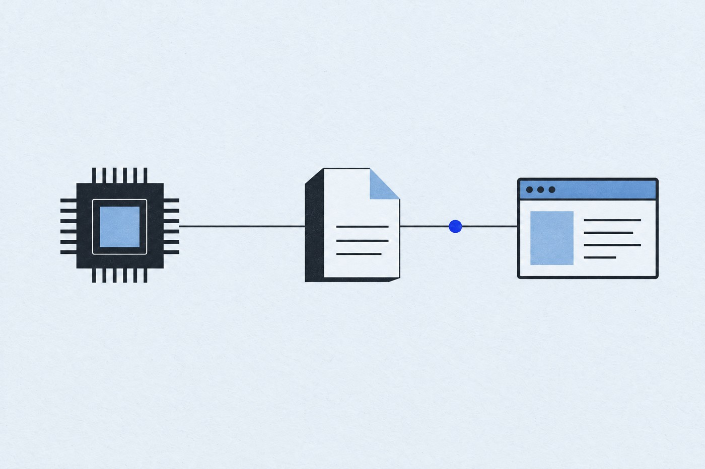

v3.14 · COMPLIANCE & EXPORTS01
v3.14 · 合規、Merkle 與格式化匯出
新增 --compliance 對照 NIST SP 800-147／155／193 與 MITRE ATT&CK；缺證據會是 Unverifiable，不當成通過。--merkle 僅對白名單事實建立 SHA-256 葉雜湊，不輸出值；SARIF、JUnit、CEF、OTLP/JSON 可供下游工具使用。
v3.14 官方發布說明 ↗XinSpect 是 Windows x64 桌面工具，涵蓋硬體監控、韌體／作業系統對帳、證據快照與安全態勢。它會說明數值由誰提供，也區分讀不到、不支援、權限不足與讀取失敗。本網站只介紹產品，不會掃描你的電腦。
XinSpect-Ai有限測試版非正式診斷工具 · 持續驗證有限測試版非正式診斷工具 · 持續驗證
測試 repo 描述 Qwen3-1.7B + 專案 LoRA，合併後量化 Q4_K_M。模型依外部檢索片段或 SQLite 資料回答；目前只適合解釋文件、引用檢索內容與有限配置分析。
本網站沒有 AI 對話。測試版不代表訓練完成或可可靠診斷；不會自行讀取你的硬體，也不會改變任何設定。
查看 XinSpect-Ai 測試版與測試報告 ↗已知失敗：45 題越界問題中有 13 題未拒答；查不到欄位時可能回傳相鄰欄位；缺少檢索片段時曾編造來源檔名或行號。公開測試 repo 未包含索引與 entities.db，無法僅靠公開檔案重現完整檢索／查表測試。
v3.14 加入合規／證據匯出與本機快照族群比較；v3.15 加入本機 Redfish 匯入並修正偏好、迷你 HUD 與 WMI 守護流程。
新增 --compliance 對照 NIST SP 800-147／155／193 與 MITRE ATT&CK；缺證據會是 Unverifiable，不當成通過。--merkle 僅對白名單事實建立 SHA-256 葉雜湊，不輸出值；SARIF、JUnit、CEF、OTLP/JSON 可供下游工具使用。
v3.14 官方發布說明 ↗--speculation 的七項 infer.* 明確標「推測」、附信心與依據，且不進合規判定或 Merkle 樹。--compliance-diff 只比較既有 JSON；--fleet 只讀本機快照目錄，不跨機上傳。
v3.14 官方發布說明 ↗--redfish <directory> 對已匯出的 Redfish 目錄樹產生唯讀摘要；沒有 HTTP client，拒絕外部 @odata.id 與路徑穿越。另修正主題偏好損壞復原、關閉後重建迷你 HUD 與高負載下 WMI 探針誤判。
v3.15 官方發布說明 ↗三張參考圖標示 v3.09，僅供視覺方向參考；其中 i9-14900K、RTX 4090、溫度與功耗是示例，不是目前 Release 的實機畫面或本站取得的讀數。核對 v3.09 參考圖與 v3.15 實作 ↗
下列核對的是 v3.15 原始碼與測試，不是網站硬體掃描。參考圖標示 v3.09；型號、溫度與功耗是示例，不是 v3.15 實機資料。
感測器服務依外部 provider 與硬體取得支援欄位；圖表有取樣間隔，不代表更短尖峰。畫面中依賴 LibreHardwareMonitor、Windows／驅動等來源；實際可見欄位會因平台而異。
MSR 路徑受允許的唯讀欄位與驅動條件限制；PCI 對帳只檢查特定欄位。BAR 解碼不會用寫入式大小探測；v3.15 未找到完整 256-byte config-space viewer。
可做有限態勢檢查與 ETW 事件觀察；BYOVD 雜湊／可疑程序比對提供線索，不等於全面攔截或自動清除。v3.15 驅動與橋接程式有明確部署／權限邊界。
參考圖上的兩個模擬按鈕不在 v3.15 BlueSquadron XAML／ViewModel 的正式介面中。測試使用假事件與測試替身，不會載入脆弱驅動或啟動真實惡意程序。
以下數據依不可變 v3.15 README 與程式碼計數方法；每一項都能回到官方來源複核。
FactKeyCatalog 的編譯期識別鍵數，不是本機掃描結果，也不代表每台電腦都支援全部項目。
156 個域由第一段前綴去重；其中 34 個只有 1 把鍵、67 個不超過 3 把、12 個至少 20 把。
成員依裝置與情境展開的鍵家族；家族數不是每台機器上會產生的事實數。
PageRegistry 中登記的可達畫面，不代表 65 種硬體或完整度。
Views/*.xaml 計數，包含視窗、對話框與控制項。
HelpCatalog 的 Entries 數，不是使用者指南頁數。
Services 目錄中的 C# 檔案數，依 README 計數方式。
排除 obj、bin、work、publish-* 與 .git 後計數。
ChangelogCatalog 登記筆數，不等於 GitHub tag 數。
這些數字只描述 v3.15 程式庫的目錄、畫面與說明規模；不能推論準確率、完成度、硬體支援率或實際讀取成功率。查看官方計數方法 ↗
下列說明以 v3.15 原始碼為基準。實際可讀內容取決於裝置、韌體、驅動、Windows、權限與外部感測器設定。
CPUID 提供處理器身分與能力；LibreHardwareMonitor 與 Windows 計數器提供各自的即時資料；MSR 路徑只讀取程式允許的暫存器。感測項目與更新率依硬體、provider、驅動與權限而異。
對照 SPD／SMBus 直讀、SMBIOS／WMI 回報與目前生效狀態；來源不同的值分開標記，未填欄位不猜。
展示 ATA SMART、NVMe health log 與 Windows 回報的健康、磨耗、錯誤和累計計數器；保留裝置／控制器來源差異。
整合顯示卡識別、PCIe 鏈路與可用的驅動遙測；NVIDIA 裝置可經 NVML 提供部分溫度、功耗、時脈、風扇與 ECC 欄位。
涵蓋 SMBIOS、ACPI、UEFI 變數、PCI／BAR 資源與部分晶片組安全旗標；各項讀取通路與可用性分開呈現。
彙整 Windows／WMI 與效能計數器、系統事件、裝置診斷、感測趨勢與歷史回放；匯出報告支援 HTML、Markdown 與純文字。
總覽保留近 90 秒趨勢；歷史回放保留約一小時秒級樣本，更早資料按分鐘保存最小／平均／最大值。
硬體、韌體與 Windows 是不同來源，不互相代替；只陳述一致、矛盾或無法驗證及其依據。

HARDWARE · FIRMWARE · WINDOWSCPUID、MSR、PCI、LibreHardwareMonitor 感測器，以及 SPD／SMBus、SMART／NVMe 等直接或裝置讀取路徑。
SMBIOS、ACPI、UEFI 變數與平台宣告；讀取失敗、未支援與空白欄位分開標示。
WMI／CIM、效能計數器、驅動與事件紀錄；Windows／驅動回報不冒充硬體直讀。
只有 Present 代表本次成功取得該值；其餘狀態不以 0 填補，也不表示安全或健康。
程式直接讀取或量出，例如 MSR、感測器。
由 Windows、驅動或韌體宣告，未由程式獨立驗證。
由其他事實推算；不是第二個獨立證據。
來源或路徑不明，只能作為待查線索。
「實測」不代表不會錯；標籤描述的是來源性質。
保留每項事實的來源、可信度與時間，方便比對變化；不把變化直接說成故障、換件或竄改。
以 JSON 保存當時實際讀到的硬體事實，附建立時間、程式版本及 SHA-256 完整性雜湊；可用穩定鍵逐欄比對新增、消失與變更。
可查看值由哪個來源提供、屬於哪種來源性質、何時讀取；沒有讀到的欄位不補成 0。
快照預設遮蔽標記為敏感的值；遮蔽範圍取決於事實的敏感標記，匯出或分享前仍應檢查內容。
功能描述、方法、限制、授權與測試統一連到 v3.15 標籤或對應官方測試 repo，避免把主線後續變更混入已發布版本。
v3.15 README 說明 1,174 把鍵、156 個事實域、65 個畫面、方法、來源、限制與計數方式。
閱讀 v3.15 官方百科 ↗方法文件描述已實作的資料契約、狀態與來源區分；已知限制頁列出不可讀、未支援與刻意不做的事項。
WinRing0、XsRegProbe 與 MMIO 等低階通路只用於特定功能；讀取能力受管理員權限、驅動狀態、Windows 安全設定與硬體支援影響。
權限提示：v3.15 README 指出部分感測、MSR 直讀與超頻頁面需要系統管理員。此網站不替每台裝置保證驅動載入或讀值成功；請以程式提示、官方 Release 與實際 Windows 權限狀態為準。
上游 v3.15 README 的測試基線與 Release 的單次執行記錄不是同一個數字；網站沒有執行桌面硬體測試。
Release 記錄 7,873 passed、0 failed；另註明 1 項 NVMe 核心硬體逾時測試依政策排除。README 的測試基線是 7,874。兩者分開呈現，不寫成「7,874 全部通過」。
查看 v3.15 README 與 Release ↗Windows runner 執行建置、選定守門測試與文件檢查；完整硬體相依測試不會在一般託管 runner 上重現。通過數不是硬體支援率或正確率。
檢視主線 CI 工作流 ↗按功能整理官方發布記錄，只列明確記載的加入、擴充與修復。日期採 GitHub Release published_at 的 UTC 日期；提及不等於新增，未能確認的日期不作推定。
正在載入功能沿革…
每個新增、擴充或修復事件均連回官方 Release；日期依 GitHub published_at（UTC）標示。未明確記載的加入或修復不作推定。
一般硬體讀取、感測趨勢與歷史資料在 Windows 桌面程式本機處理。若使用雲端 AI，資料路徑依你設定的服務與其政策而定；本網站不讀取訪客硬體。
官方發布頁提供主程式、BlueSquadronBridge、安裝器與 SHA256SUMS.txt。README 與 Release API 的主程式檔案大小紀錄不一致；此頁不複製未能一致核對的大小，請直接檢查官方附件與校驗清單。
依 v3.15 README：Windows 10 1903 以上或 Windows 11、x64、.NET 10 Desktop Runtime。部分感測、MSR 直讀與超頻功能需要管理員權限。
執行前請開啟官方 v3.15 Release 頁並核對 SHA256SUMS.txt。README 與 Release API 的 EXE 大小不同，請勿以本頁數字代替官方校驗。
官方資料差異：v3.15 README 記載 XinSpect.exe 37,714,731 bytes；GitHub Release API metadata 記載 37,757,739 bytes。因來源不一致，本頁不將任一值當作權威檔案大小；以官方下載頁與 SHA256SUMS.txt 核對。
描述問題、選取文字記錄並檢查草稿。未按下雲端提交前，內容與附件只在此頁記憶體中；提交後才會送往 Cloudflare 私有資料庫。你也可改用 GitHub 手動備援。
在你選擇分享前，內容只留在目前頁面的記憶體，不寫入 localStorage；重新整理或離開會清除。需要保留時請自行下載。
本機工具正在準備。
尚未產生草稿。請填寫至少 4 字的標題與 20 字的問題描述，再按「檢查並預覽草稿」。
先在本機檢查並預覽。自願勾選同意後，Cloudflare Turnstile 會做人機驗證；完成驗證後仍須明確按下提交，才會傳送報告與通過檢查的文字／圖片附件。免登入。
資料會交給 Cloudflare 作為人機驗證的一部分；不要求登入。
正在檢查雲端回報設定…
Cloudflare 隱私政策 ↗先檢查預覽並遮蔽個資；複製草稿或下載檔案，再自行前往 GitHub、貼上內容、附上所需檔案並提交。此連結不含任何表單內容或附件。
前往 GitHub Issues公開提醒：GitHub 公開專案的 Issue 內容可能公開；在 GitHub 手動選取附件時就會立即上傳，附件可能可被公開存取，不一定等到 Issue 發佈。請先確認願意分享。
GitHub 官方附件說明 ↗這是本機格式與風險靜態檢查，不是防毒、沙箱或真實性認證；無法保證內容安全或資料正確。保守規則可能拒絕含程式碼的正常記錄，請改用移除敏感資訊的最小純文字摘錄，仍需人工審核。
如果這個開源專案對你有幫助，歡迎到 GitHub 給我們一顆 Star。這是收藏與鼓勵，不涉及付款；本站不會代你操作。
到 GitHub 為 XinSpect 點 Star需要 GitHub 帳戶；請在專案頁親自按下 Star。